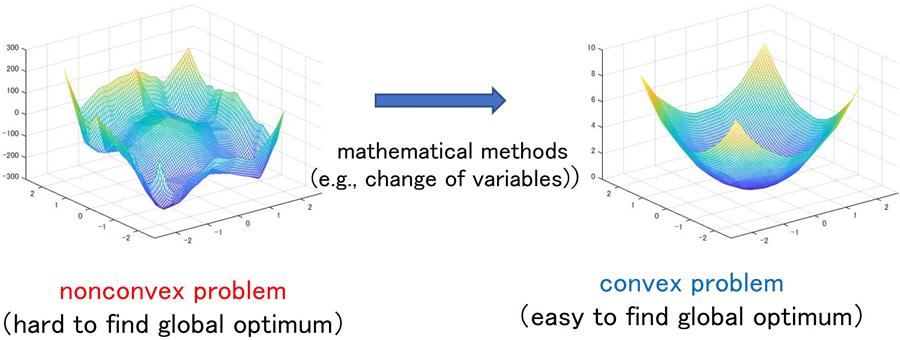
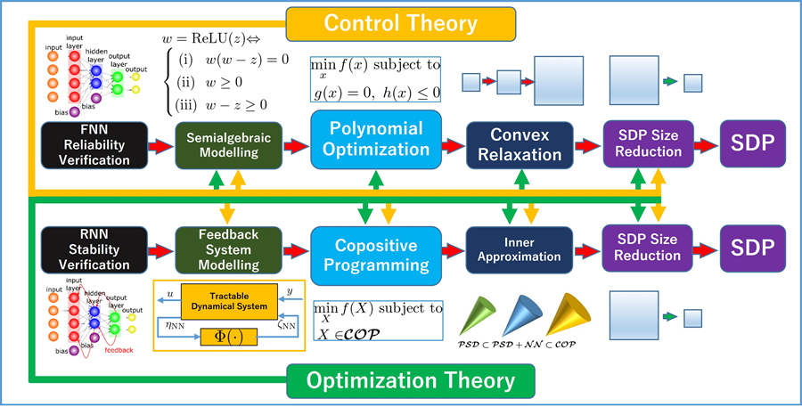

Dynamical System Analysis and Synthesis Using Convex Optimization
The problem to analyze the performance of the designed control systems or the problem to design an optimal controller with respect to a priori defined performance criterion can be cast as mathematical programming problems (optimization problems). Unfortunately, however, the analysis and synthesis problems of control systems are usually formulated as nonconvex optimization problems that are intractable in numerical computation. To overcome this difficulty, we study mathematical methods to reduce those nonconvex problems into convex optimization problems represented by linear programming problems and semidefinite programming problems that can be solved efficiently by numerical computation.

Relevant Publications
- Y. Ebihara, D. Peaucelle, and D. Arzelier, “Analysis and Synthesis of Interconnected Positive Systems,” IEEE Transactions on Automatic Control, Vol. 62, No. 2, pp. 652-667 (2017).
- Y. Ebihara, D. Peaucelle, and D. Arzelier, “S-Variable Approach to LMI-Based Robust Control,” Springer, ISBN 978-1-4471-6606-1 (2015).
- Y. Ebihara, “Systems Control Using LMI (in Japanese),” Morikita Syuppan Co., Ltd, ISBN-10: 4627921012, ISBN-13: 978-4627921016 (2012).
- Y. Ebihara, Y. Onishi, and T. Hagiwara, “Robust Performance Analysis of Uncertain LTI Systems: Dual LMI Approach and Verifications for Exactness,” IEEE Transactions on Automatic Control, Special Issue on “Positive Polynomials in Control,” Vol. 54, No. 5, pp. 938-951 (2009).
Reliability/Stability Verification of Deep Neural Networks (DNNs)
The goal of this research is to establish rigorous mathematical tools for the reliability and stability verification of DNNs by advanced control and optimization technologies. Our theoretical results will be implemented on pieces of software that can be used by researchers, engineers, and practitioners to verify reliability and stability of DNNs without any simulation.

Relevant Publications
- Y. Ebihara and D. Xin and V. Magron and D. Peaucelle and S. Tarbouriech,
“ Local Lipschitz Constant Computation of ReLU-FNNs: Upper Bound Computation with Exactness Verification,” to appean in Proc. of the 22nd European Control Conference, Stockholm, Sweden, 6pages (2024). - R. Takao, T. Fujii, H. Motooka, and Y. Ebihara, “Stability Analysis of Continuous-Time Recurrent Neural Networks by IQC with Copositive Multipliers,” Transactions of The Institute of Systems, Control and Information Engineers, Vol. 36, No. 1, pp. 17-25 (2023).
- H. Motooka and Y. Ebihara, “L2 Induced Norm Analysis for Nonnegative Input Signals and Its Application to Stability Analysis of Recurrent Neural Networks,” Transactions of The Institute of Systems, Control and Information Engineers, Vol. 35, No. 2, pp. 29-37 (2022).
- Y. Ebihara, H. Waki, V. Magron, N. H. A. Mai, D. Peaucelle, and S. Tarbouriech, “ l2 Induced Norm Analysis of Discrete-Time LTI Systems for Nonnegative Input Signals and Its Application to Stability Analysis of Recurrent Neural Networks,” The 2021 ECC Special Issue of the European Journal of Control, Vol. 62, pp. 99-104 (2021).
- Y. Ebihara, H. Waki, V. Magron, N. H. A. Mai, D. Peaucelle, and S. Tarbouriech, “ Stability Analysis of Recurrent Neural Networks by IQC with Copositive Multipliers,” Proc. of the 60th IEEE Conference on Decision and Control, Austin, Texas, USA, 6 pages (2021).